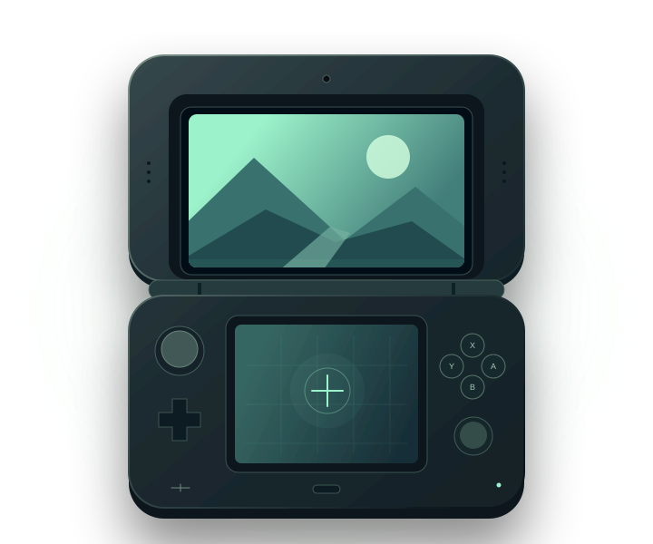

◌ Experimental source. No verified IPA release yet.
01 / 02 A familiar feeling.

✳ Made for the small screen.Handheld illustration · Interface concept
Built around the way you playiPhone + iPad·SwiftUI + Metal·Touch + controller↗
A home for the handheld era
Less looking around. More finding your next game.
A small, deliberate interface for a big undertaking. The library and controls are implemented; native gameplay still needs device validation.
01Your collection
▤Your little library.+
All games3DSSwitch
▧
Make room for play.
Import a game to begin.
Interface concept
Your games, together.
Import from Files, find a title, and pick up where you left off. Local storage, system filters, and last-played dates keep the library in order.
02Find your feel
XYAB
Every input considered.
Hold a direction and a button together. Use both analog sticks, the touchscreen, or a compatible Bluetooth controller. Leave the app and the session pauses.
03Native by design
METAL400 × 240
Two screens. One surface.
Paired 3DS displays and a Switch viewport use real Metal layers. Touch coordinates and display resizing connect directly to the selected core.
Good foundations. Shared credit.
Standing on the work of many.
Tandem is a new iOS frontend and integration project. Emulation comes from existing open-source cores, with pinned source and checked patches.
Nintendo 3DS
Cytrus / Azahar
The iOS 3DS core from the Folium project, built on Azahar and Citra. The adapter selects the interpreter unless the process has debugger/JIT state.
Nintendo 3DS and Nintendo Switch are trademarks of Nintendo. Tandem is an independent project.
Where things stand
Early days. Clear expectations.
This is an experimental source project. The interface and integrations are written; a playable release requires a successful Mac build and physical-device testing.
✓
Library foundation
File import, persistence, rollback, and recovery tests pass on Linux.
Tested package↗
Native app + cores
iOS compilation, native linking, and gameplay remain unverified.
Needs a Mac + device◌
IPA distribution
No verified, signed IPA is available. Start with the source and build guide.
Source preview
For the curious builders
Your next chapter starts with a build.
macOS, Xcode 26+, and a little patience. Begin with the interface, then prepare the emulator cores for your own device.